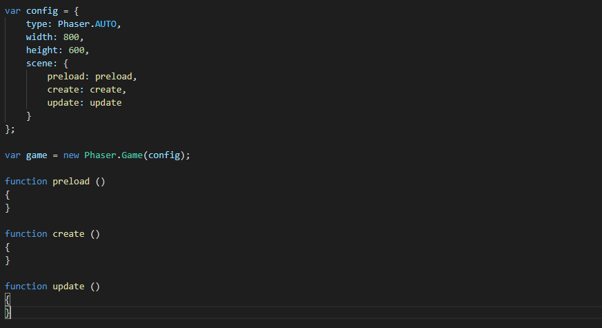

Phaser
Estrutura de jogos HTML5 para desktop e dispositivos móveis.

Blioteca de Players
Basta importar o código para já ter criado o seu player.

Biblioteca de Área
Um código nativo da Biblioteca para criar a área de um Jogo.

Biblioteca de Plataforma
Existem diversas Importações prontas de plataformas para o seu jogo!

Biblioteca de Cursor
Isso mesmo! Existe inclusive uma função pronta para o cursor do mouse.